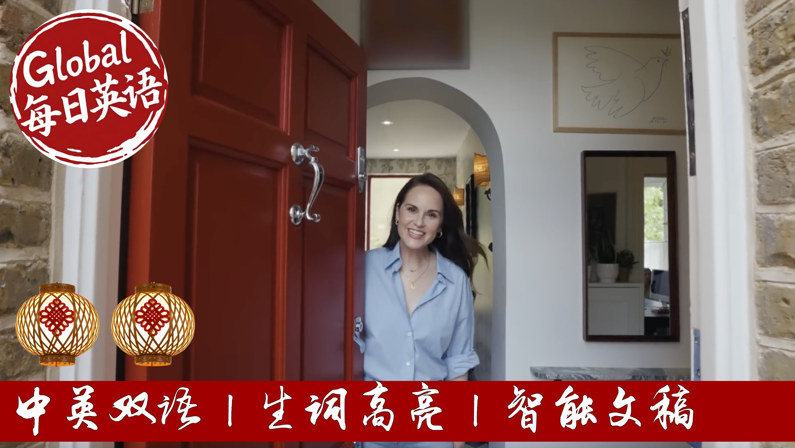

【走进《唐顿庄园》女主米歇尔·道克瑞在伦敦的家】
Summary: A tour of Michelle Dockery's home reveals a blend of personal history and curated design. The actress worked with interior designer Emma Ainsko to transform the space, incorporating an extension for a spacious kitchen-living area. Personal touches abound, from heirlooms like her grandmother's silverware cabinet to Alfie-themed artworks and memorabilia from Downton Abbey. The home features a gallery hallway, custom-made furniture, and a cozy den with cinematic accents. Each room reflects Dockery's love for art, family, and her beloved lurcher.
摘要： 米歇尔·道克瑞的住宅融合了历史传承与现代设计。她与设计师艾玛·安斯科合作，通过扩建打造出开阔的厨房起居空间。家中充满个人印记：从祖母传承的银器橱柜，到以爱犬阿尔菲为主题的艺术品，再到《唐顿庄园》的纪念道具。画廊式走廊、定制家具和影院风格休闲室相得益彰。每个房间都彰显着主人对艺术、家庭和猎犬的挚爱，呈现英伦优雅与私人记忆的完美结合。

⏱️ Estimated Reading Time: 20 min.
📚 四级生词 📚 六级生词 📚 雅思生词 📚 托福生词 📚 专八生词 📚 SAT生词 📚 考研生词 📚 GRE生词
Hi AD, I'm Michelle Dockery, welcome to my home.
Come in.
So this is the boot room.
It feels like quite a luxury to have a dedicated space just for throwing your coats and shoes on the floor.
It's much tidier today thanks to AD than it usually does.
The previous zone is actually put in this partition wall as this was part of the room next door and created this boot room.
This is where we walk in when we've come in from muddy dog walks and actually Alfie, our five-year-old lurcher, has his own little dedicated hooks here from Rose Uniac, very expensive dog hooks for his lead.
And I'll take you through to the hallway.
I always wanted a gallery hallway so over the years I've collected lots of different pieces of artwork, some are from Etsy, some are from antique markets.
You'll see lots of pictures of sight hounds around the house just like our dog Alfie.
Let's go down to the kitchen.
So this is our kitchen and living space.
This is where we spend most of our time.
We worked with an incredible interior designer called Emma Ainsko on this house.
When we first bought the house there were two walls separating this area.
There was a very dark dining room and the kitchen was much smaller.
So we added an extension to make it one big space.
We wanted to keep as much of the kitchen as possible because it was beautiful.
So this was all here when we bought the house.
We just extended the island and added a dining area so that we could then have a more family room area.
I love this island for having a cooker in the middle because it's just really lovely for when you're entertaining and cooking and friends can sit here and you don't turn your back to them.
Why are you cooking?
The pistachio green doors were a feature that I completely fell in love with when we saw this house.
And so I really wanted to keep them.
So we added the extension and just put them on the end and then added the other windows.
And it's just made the space feel so much brighter and area.
This space is really lovely.
This was also here when we walked the house.
It's like our pantry area.
We added this breakfast snack and this is where we make our coffee and our tea in the mornings.
So this is the dining area which is the New York Sension.
Some really great meals in here, Christmas birthdays, Easter.
I love this dining table.
It's from a brand called Konk.
We wanted something that had sleeves so that you could make it a much bigger table for bigger dinner parties.
We matched the Crittle windows, the match the Crittle.
We just kind of wanted to make the space feel really cohesive.
This cyborg was designed by our interior designer Emma Ainsko.
It was made like a lot of the furniture in this house by two carpenters from Syria who we've worked with a lot on this house.
Their brothers and they are so talented.
And as you can see it's the most beautiful piece and Emma found this incredible piece of marble to go on top.
So when we're having dinners this is where the food goes, the wine goes, if you're doing more of a buffet.
And then above it is this photograph by Slim Arons, one of my favourite photographers.
And we absolutely love this photograph.
It really kind of shows family and food and entertaining.
We could be perfect for this room.
And then also when we're entertaining in the summer, when the weather's good, we also like to entertain outside.
So this is more of like the family room.
I've spent quite a lot of time in here.
I spend quite a lot of time in here.
This is so further because it's really comfortable.
It's from Restoration Hardware and this is where I watch a lot of TV.
That is a chess board.
And I'm learning how to play chess.
I was inspired by the Queen's Gambit, Scott Frank show, who I had the pleasure of working with many years ago.
But I'm not very good.
I'm in a more practice.
And then this I really want to show you, which is family heirloom.
This is my grandmother's.
And it's been handed down to me and my sisters and I have it at the moment.
And it is probably the most down-to-nabby thing that I own.
This is filled with beautiful silverware, which we tend to use at Christmas and special occasions.
So I am known to occasionally polish my silverware.
There's lots of interior magazines here.
Lots of architectural digest.
I'm a big fan.
One of my favourites was Dakota Johnson's House.
We've also got a record player down here.
This was a wedding present from a friend.
And it actually has a little etching that my friend actually did for us of our dog.
It's all about the dog, really.
So I got this from eBay.
I like collecting weird things like this.
And it's a lady just sitting in a pool.
But when you turn it over, I don't know if we can actually show it.
It's so weird.
It's just her barn with a sort of cat there.
Look, this is so bizarre.
But I thought I've got to have it.
This is one of my favourite things in the house, the shelving unit.
It's from the Con-Rand shop.
I actually saw it in the store in the meeting room.
So it wasn't actually for sale.
And fell in love with it and loved the colour.
I just loved the red.
So Emma, our interior designer, asked them to make one for us.
It's gorgeous.
It's one of my favourite things.
I love red, as you can see.
Lots of pop some red everywhere.
This is the Lou.
Just so people know what's behind here and where to find the Lou.
This is just one of my favourite little rooms in the house.
I love a downstairs Lou.
And this wallpaper is by Antoinette Poisson.
And it's really cute.
That's such a tiny little sink.
So this is our den TV room.
This is where we tend to watch a lot of movies and chill out on these gorgeous sofas.
I wanted to make it feel really cosy.
So we put in these gorgeous curtains just to kind of make it really cosy at night.
And these little so her home lamps just make it kind of feel like a cinema when you're watching a film.
As a piece of art by David Austin, Smoketown, I've had that for many years.
Something I'll show you here, which is a collection of books that were gifted to me from Maggie Smith.
And Laura Carmichael has the other half.
They're these amazing vintage, paved, torreal books, which show costumes from many different periods.
So that's something I really cherish.
This poster is my favourite poster from the movie The Gentleman.
That little gun in the glass of whiskey is the one that I use in the film to shoot the two heavies.
This picture is from the first series of Downton Abbey by Nick Briggs.
It's probably about the only image I have in the house of me as Lady Mary in Downton.
So it's sort of slightly hidden sort of modest up there above the door.
And I really want to show you this, which is a Saga Ward for Best on Sombor for Downton.
We got a few.
And this one has a miniature pair of pants on its head.
I did a play a few years ago and it was sort of an in-joke, but my dresser gave me a little tiny pair of Barbie pants.
And that's nowhere they live.
There's another homage to Alfie up there, another sight-hound.
That one's from TK Max.
So this is the office.
This is actually one of my favourite rooms in the house.
It's one of the brightest rooms and we chose a really bright white colour to kind of make it as bright as possible.
It's where we work, it's where we read, it's where we listen to music.
I tend to read scripts in this chair because it's a really gorgeous recliner chair.
I've also got memorabilia I like to keep in this room.
And one thing, in fact the only thing I got from Downton Abbey was this little dog, which some people will recognise from the train station scene when Mary gives us to Matthew before he goes off to war.
And what's mad about this is this was a very long time ago.
And little did I know that in the future I would get a dog that looks just like this dog.
So this is another homage to my dog.
There seems to be loads of them around the house.
This is also a gift that was given to us all at the end of the series of Downton.
It's the season one first episode script and they bound it into this beautiful book.
Something else I'm also really proud of that I want to show you is this photograph of myself Laura Carmichael and Carl Richards.
This was probably the most star-struck moment of my life.
I am a housewife of Beverly Hills fan.
And we met her at the event and we insisted on going back onto the red carpet to have a photo of Carl Richards.
So I'm very proud of that.
The artwork is kind of like the central piece in this room.
We had this piece commissioned by Annaco Mosterts, a really talented young South African artist.
And my brief to her was I wanted something that feels really calm and it's going to be in a room where we listen to music, where we read.
And that's all I told her and this is what she did.
And it's so beautiful and I just think really based the room thing.
This fireplace, when we moved into the house, it was really dark.
We decided to kind of lighten the whole thing.
And our interior designer Emma Ainsko told me about this amazing tile designer called Petro Palumbo.
He does these gorgeous little paintings on tiles and then they also do custom ones.
And so we of course had to get a custom one made of our dog Alfie.
This artwork you'll see, there's a few pieces around the house.
This is another piece by David Austin, who is actually a very close friend of mine's dad.
And he is an incredible artist who I've known for a really long time.
And it's really lovely having his artwork around the house.
So this is the main bedroom.
Emma our designer has made this into a really calming, beautiful space.
I love the colours in here.
And actually it kind of all started with this Egon shield print.
I love the colours in it so she kind of brought out the colours from the picture.
So you can see the green on the bed.
And this lovely colour of these walled rows, which were also custom made by our really talented artist.
And it also has really beautiful iron mungry that Emma found.
The bedside tables I really love, these are from Susie Atkinson and also the lamps are from Susie Atkinson too.
And this lamp is actually from Sezan, a clothing brand that I really love.
And now they're doing homeware, which is really exciting.
Our love for post beds is always a bit of a dream to have one.
And we have these lovely shears made just to kind of elevate it a bit.
The artwork, the selection of antiques from Battersea Arts Fair, somewhere that I love going every year.
And then also the painting over there is also from Battersea Arts Fair, which is really gorgeous or calming painting for this room.
I'll take you through to the ensuite.
So the colours blend really beautifully in here from the bedroom into the bathroom.
I love the marble in here.
Verde Launa, which is just felt really kind of unusual.
This vanity again was made by our carpenters.
This print is by a photographer called Tom Allport, but I've just discovered we wanted something that have real kind of like holiday vibes.
And through here is the dressing room.
The colours are really beautiful in there.
The walls are a fair and ball colour called Enchira Blue, which is one of my favourites.
The dressing table is from Trove.
My mum always had a dressing table growing up.
It's always nice to be able to kind of sit somewhere and, you know, do your hair and make up.
It's been lovely having you AD.
Thanks so much for coming.
Bye!